| Original Game NPC added Portraits | |||||||
|---|---|---|---|---|---|---|---|
 alatos.cre |
 albert.cre |
 alyth.cre |
amaran.cre |
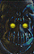 sarev1.cre |
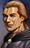 bjorni.cre |
 bassil.cre |
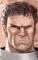 belt.cre |
|
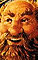 bently.cre |
 brage.cre, brage2.cre |
brilla.cre |
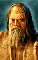 farmbr.cre |
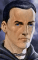 cadder.cre |
 coksmth.cre |
 davaeo.cre |
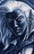 drizzt.cre |
|
drienn.cre |
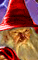 elmin2.cre and others |
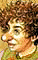 gellan.cre |
 gerde.cre |
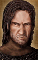 greywo.cre |
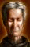 jessup.cre |
 halbaz.cre |
 liia.cre |
|
larze.cre |
 keldda.cre |
korax.cre |
 mulahe.cre |
 narlen.cre |
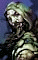 niemai.cre |
 petrin.cre |
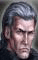 rielta.cre |
 seniya.cre |
 thalan.cre |
 vai.cre |
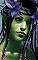 shoal.cre |
tamoko.cre |
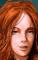 tenya.cre, tenya2.cre |
 pumberl.cre, pumber2.cre |
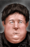 winthr2.cre and others |
|
yago.cre |
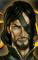 angelo.cre |
arkush.cre |
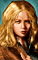 brielb.cre |
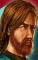 deltan.cre, deltan2.cre |
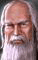 gorion.cr, gorion3.cr |
 sarevo.cre, sarevo2.cre |
 scar.cre |
|
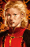 vail.cre |
volo.cre |
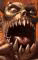 tazok.cre, tazok2.cre |
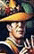 CHASE.cre |
 DRYAD.cre |
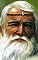 FIREB1.cre, FIREBE.cre |
 KEEPER.cre |
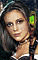 SILKE.cre |
 GATEWA.cre, GATEWA2.cre |
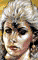 JOIA.cre |
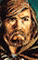 MARL.cre |
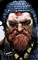 PERDUE.cre |
 WINSKI.cre, WINSKI2.cre |
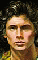 TAEROM.cre |
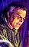 TARNES.cre |
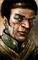 GALTOK.cre |
|
GELLAN.cre |
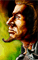 HAFIZ.cre |
 LANDRI.cre |
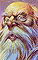 MADARC.cre |
NEB.cre |
 hurgan.cre |
 ulraun.cre |
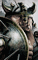 durlagt.cre |
|
delain.cre, delain2.cre |
 durlyl.cre, durlyl2.cre |
karoug.cre |
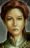 kaisha.cre, kaisha2.cre |
 mendas.cre and others |
 DELSVIR.cre |
 DUSHAI.cre |
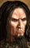 handal2.cre |